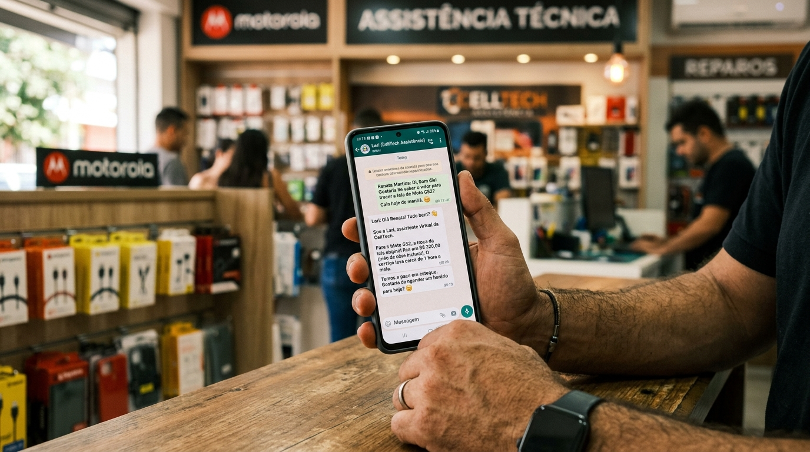
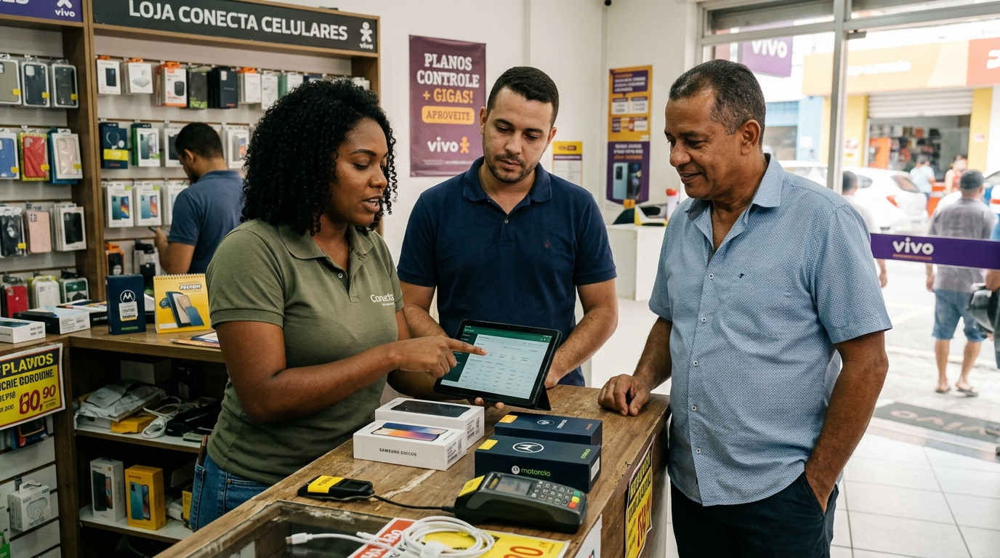
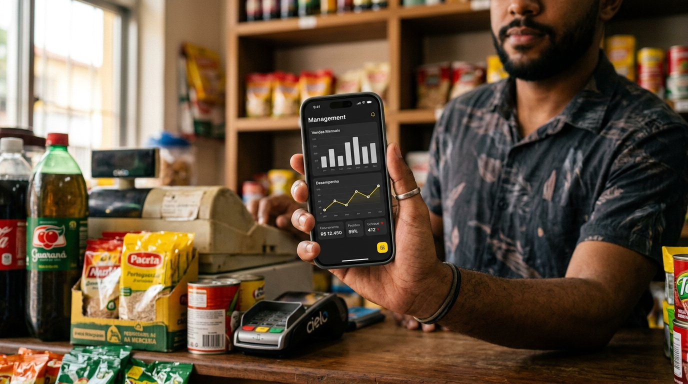

Acelera
Intervenção comercial especializada em rede de canal telecom — por quem viveu 21 anos dentro da loja.
A fotografia do programa.
A rede de parceiros Claro — 100.000+ pontos de venda classes C, D e E — opera hoje predominantemente em regime de balcão: vende produto quando o cliente pede, não vende serviço por falta de método, e não se reconhece como embaixadora da marca. Penetração de serviço baixa, ticket médio apertado, margem sob pressão, churn de canal alto.
O Claro Acelera é uma intervenção comercial especializada que atua em três camadas integradas — Pessoas, Processos e Tecnologia IA — com o objetivo de rentabilizar o parceiro, aumentar penetração de serviço e converter a rede em embaixadora regional da Claro.
A diferença que importa
Não é consultoria genérica de desenvolvimento de MPE. É intervenção especializada em varejo de canal telecom, conduzida por executivo que viveu 21 anos no chão de loja — sete deles como Gerente Nacional de rede com 4.500 vendedores e R$1 bilhão/ano em faturamento.
Arquitetura da proposta
- 5 pacotes escalonados do gratuito ao premium
- 3 cenários de escala: 300 parceiros (12 meses) · 1.000 (18 meses) · 3.000 (24 meses)
- KPI auditável por onda — penetração de serviço, ticket médio, churn de canal, NPS final
- Ondas de 90 dias com ajuste de método entre ciclos
O problema do canal, traduzido em KPI.
O parceiro classes C, D e E da rede Claro opera hoje em um padrão comportamental que impacta cinco KPIs sensíveis:
- Penetração de serviço baixa. Vende o produto que o cliente pediu, não identifica a oportunidade de serviço agregado. Resultado: ticket médio aquém do potencial do PDV.
- Abordagem reativa. Falta método consultivo. O time da loja não sabe conduzir conversa de serviço — e o parceiro não sabe treinar o time.
- Gestão amadora. Dono faz tudo, sem ritual, sem indicador, sem cadência. Resultado: margem sangrada em ineficiência, operação sem escala.
- Baixa percepção de valor em capacitação. Parceiro trata investimento em desenvolvimento como despesa. Não compra programa porque nunca viu programa entregar. Cobertura massiva sem resultado apenas reforça essa crença.
- Desengajamento de marca. Parceiro se enxerga como revendedor, não como extensão comercial da Claro. Logo, não defende a marca, não faz cross-sell, não gera NPS local.
Conclusão operacional
O problema não é falta de produto, não é falta de treinamento e não é falta de informação. É ausência de intervenção comercial especializada que combine método, acompanhamento de indicador e linguagem de varejo real.
Programas generalistas tratam sintoma — "falta empreendedorismo". A intervenção correta trata causa — comportamento comercial no PDV telecom.
Por que especialista, não generalista.
A Claro avaliou, ao longo dos últimos meses, alternativas generalistas de desenvolvimento de MPE para este desafio. São soluções respeitadas em seu escopo original — desenvolvimento amplo de micro e pequenos empreendedores no Brasil — mas desenhadas para cobrir um universo muito maior e mais diverso do que a rede Claro.
Esse é um match de categoria errado. Rede de canal telecom não é universo de MPE genérico. É rede com acordo comercial vigente, metas contratuais, produto técnico, margem regulada, e competição direta com outras operadoras em cada ponto do país. Tratar isso como "desenvolvimento de micro negócio" é passar por cima da especificidade que faz o problema existir.
O Claro Acelera foi desenhado de outra forma: como intervenção comercial especializada em rede de canal telecom. Toda a metodologia, todo o conteúdo, todo o indicador e toda a voz — vêm de dentro do varejo. Não de fora olhando para dentro.
| Vetor | Consultoria generalista | Claro Acelera |
|---|---|---|
| Especialização | Empreendedorismo e MPE em geral | Varejo de canal telecom |
| Voz | Consultor externo com framework padrão | Executivo com 21 anos dentro da loja |
| Método | Curso / trilha de desenvolvimento | Intervenção comercial com ritual, indicador e IA |
| Escala | Cobertura massiva genérica | Ondas com KPI auditável por ciclo |
| Resultado medido | Participação, conclusão, NPS do aluno | Penetração de serviço, ticket, churn de canal, NPS final |
| IA aplicada | Ausente ou periférica | Camada estrutural — análise, capacitação, inteligência comercial |
| Linguagem | "Empreendedor brasileiro" | "Parceiro Claro C/D/E com acordo vigente" |
Leitura do parceiro classes C, D, E.
Perfil de canal
PDV com 1-5 colaboradores. Faturamento R$20k-R$150k/mês. Proprietário opera em regime de presença — a loja não roda sem ele. Investimento em desenvolvimento de equipe: próximo de zero nos últimos 36 meses. Ensino médio a superior incompleto na maioria. Idade 30-55.
Comportamento comercial atual
- Vende reativo, não consultivo
- Sem ritual de gestão (daily, 1:1, retrospectiva)
- Sem dashboard, decisão por achismo
- Ticket médio abaixo do potencial do PDV
- Treinamento do time inexistente ou pontual
O que este perfil rejeita
- Linguagem acadêmica, framework abstrato, "transformação digital"
- Curso de 40h+ em plataforma sem acompanhamento
- Promessa genérica de "crescimento"
- Material que cheira a consultor externo sem vivência de loja
O que este perfil aceita
- "Segunda-feira você já fatura diferente"
- Conteúdo em celular, curto, com caso real de loja do mesmo porte
- Ferramenta que ele vê funcionando antes de pagar
- Autor que já viveu o que ele vive — não consultor teórico
- Indicador claro: "quem faz isso vende X% a mais em Y dias"
O que este perfil significa para a Claro
Este perfil representa aproximadamente 90% da rede parceira Claro atual. É o segmento onde a penetração de serviço tem maior gap em relação ao potencial, onde o churn de canal é mais alto, e onde a marca da Claro tem menor presença como embaixadora local. É o segmento onde cada ponto percentual de melhoria impacta mais.
A tese que governa o programa.
A loja que vende produto vive da margem que o cliente já decidiu pagar. A loja que vende serviço decide o quanto o cliente vai pagar. A Claro oferece o produto. O Claro Acelera oferece ao parceiro o método para vender serviço — e à Claro, a rede que o vende.
Três argumentos de venda — um para cada stakeholder
O método — Pessoas, Processos, Tecnologia IA.
A intervenção opera em três camadas integradas, aplicadas em todos os pacotes — do gratuito ao premium, ajustadas em profundidade por nível. É a mesma arquitetura metodológica que a consultoria genérica não entrega porque não é especialista em varejo.

🧠 Camada 1 — Pessoas
Mentalidade do lojista em 5 pilares.
O parceiro classes C, D e E tem conhecimento de produto e instinto de venda, mas opera com lacunas estruturais de mentalidade comercial. A intervenção desenvolve cinco pilares que separam a loja que rentabiliza da loja que estagna:

🔁 Camada 2 — Processos
Metodologia PULSAR de gestão comercial — com filtro H de humanização.
PULSAR é uma cadência operacional de seis rituais que se repete toda semana na loja. Transforma operação intuitiva em operação com indicador:
- P — Planejar · entrar na semana sabendo o que precisa acontecer
- U — Usar/Executar · rituais diários curtos (15min) com indicador visível
- L — Lapidar · identificar erros em tempo real e corrigir na próxima rodada
- S — Sustentar · travar o que está funcionando como padrão de operação
- A — Alavancar · escalar o que funciona para o resto do time ou para outras lojas
- R — Replicar · formar o time para executar sem depender do dono
H — Humanização (filtro permanente): cada decisão do PULSAR passa pelo filtro "estou tratando essa pessoa — cliente ou vendedor — como ser humano?". Sem H, produtividade vira burnout e churn de time. H é o que faz o método sustentável em loja pequena onde relacionamento é ativo.
⚡ Camada 3 — Tecnologia IA
IA aplicada como alavanca de produtividade, dados e capacitação contínua.
A tecnologia não é bandeira — é camada estrutural. Opera em quatro frentes:
- Análise de dados do PDV — transforma planilha em indicador visual, indicador visual em decisão, decisão em roteiro de venda por perfil de cliente.
- Capacitação contínua assistida — o time da loja é treinado em ciclos curtos, com conteúdo personalizado por gap de performance, sem depender de disponibilidade de instrutor humano.
- Inteligência comercial — IA analisa histórico, identifica cliente pronto para upgrade, sugere oferta certa por perfil, antecipa churn.
- Automação do repetitivo — libera tempo do lojista para o que realmente gera margem: vender serviço, cuidar de cliente, desenvolver time.
Critério de design da camada IA: nenhuma ferramenta exige que o parceiro saiba programar ou entender o que é um LLM. Toda capacidade é entregue como função comercial concreta — "analisar cliente", "sugerir oferta", "treinar time" — não como tecnologia a consumir.
Uma escada de valor — do gratuito ao premium.
Cinco pacotes escalonados. Cada um com KPI comercial mensurável. Entra por onde o parceiro cabe. Sobe por resultado, não por tempo de casa.
Quadro visual comparativo — o que cada pacote entrega
Visão completa com 38 itens. Verde para incluído, traço para não-incluído, estrela para destaque exclusivo do Embaixador.
| Entrega | StartR$ 0 | AtivadorR$ 500 | OperadorR$ 800 | MasterR$ 1,5–2,5k | EmbaixadorR$ 5k+ |
|---|---|---|---|---|---|
| Base · para todos | |||||
| Autodiagnóstico das 5 Dimensões | ✓ | ✓ | ✓ | ✓ | ✓ |
| eBook "10 erros do parceiro que só vende produto" | ✓ | ✓ | ✓ | ✓ | ✓ |
| Planilha de controle de fluxo | ✓ | ✓ | ✓ | ✓ | ✓ |
| Comunidade online (Telegram) | ✓ | ✓ | ✓ | ✓ | ✓ |
| 5 aulas gravadas curtas | ✓ | ✓ | ✓ | ✓ | ✓ |
| Assistente digital de apoio ao parceiro no WhatsApp | ✓ | ✓ | ✓ | ✓ | ✓ |
| Ativador em diante | |||||
| Aulas ao vivo semanais (coorte) | — | 4× | 12× | 16× | 20× |
| Playbook "Abordagem em 5 Perguntas" | — | ✓ | ✓ | ✓ | ✓ |
| Playbook "Perfil do Cliente em 3 Min" | — | ✓ | ✓ | ✓ | ✓ |
| IA de análise de conversão de atendimento | — | ✓ | ✓ | ✓ | ✓ |
| IA de recomendação de oferta por perfil | — | ✓ | ✓ | ✓ | ✓ |
| Missões semanais com check-in | — | ✓ | ✓ | ✓ | ✓ |
| Certificado oficial | — | Ativador | Operador | Master | ★ Embaixador |
| Operador em diante | |||||
| Ciclo PULSAR completo adaptado ao varejo | — | — | ✓ | ✓ | ✓ |
| Estrutura de 1:1 com colaborador | — | — | ✓ | ✓ | ✓ |
| Conversas estruturadas com time | — | — | ✓ | ✓ | ✓ |
| Dashboard operacional no celular | — | — | ✓ | ✓ | ✓ |
| Biblioteca de SOPs editáveis | — | — | ✓ | ✓ | ✓ |
| Briefing comercial diário automatizado | — | — | ✓ | ✓ | ✓ |
| Monitor de performance do time com alerta | — | — | ✓ | ✓ | ✓ |
| Suporte por chat com consultor | — | — | ✓ | ✓ | ✓ |
| Master em diante | |||||
| Biologia do Bem-Estar (gestão de time) | — | — | — | ✓ | ✓ |
| Integridade com Dados | — | — | — | ✓ | ✓ |
| Círculo de Segurança | — | — | — | ✓ | ✓ |
| Jogo Infinito (legado e sucessão) | — | — | — | ✓ | ✓ |
| Dashboard completo (receita, mix, retenção) | — | — | — | ✓ | ✓ |
| Hot seat ao vivo com Rodrigo Braga (2×/mês) | — | — | — | ✓ | ✓ |
| IA de recuperação de cliente dormente | — | — | — | ✓ | ✓ |
| IA de identificação de cliente pronto para upgrade | — | — | — | ✓ | ✓ |
| Alerta de composição de mix e margem | — | — | — | ✓ | ✓ |
| Biblioteca de campanhas prontas | — | — | — | ✓ | ✓ |
| Consultoria 1:1 de implementação (2×60min) | — | — | — | ✓ | ✓ |
| Exclusivo Embaixador | |||||
| Mentoria individual com Rodrigo Braga (6×90min) | — | — | — | — | ★ |
| Diagnóstico presencial aprofundado | — | — | — | — | ★ |
| Arquitetura de IA aplicada customizada | — | — | — | — | ★ |
| Acompanhamento mensal de indicadores | — | — | — | — | ★ |
| Selo "Parceiro Embaixador Claro" na vitrine | — | — | — | — | ★ |
| Conselho de Parceiros Embaixadores (trimestral) | — | — | — | — | ★ |
| Pipeline de indicação com comissão | — | — | — | — | ★ |
Meta comercial mensurável por pacote
| Pacote | Meta comercial mensurável |
|---|---|
| Start | Baseline diagnosticada · 3 oportunidades de serviço mapeadas por PDV |
| Ativador | +15% ↗ penetração de serviço · +1 serviço por venda (30 dias) |
| Operador | +25% ↗ ticket médio · cadência PULSAR instalada (90 dias) |
| Master | +40% ↗ faturamento · dashboard ativo · time treinado em ciclo contínuo (120 dias) |
| Embaixador | Top 10% ↗ penetração regional · NPS ≥ 70 · indicação orgânica (180 dias) |
Três cenários de escala — o apetite decide.
A Claro não precisa escolher entre ambição e prudência na assinatura do contrato. A intervenção é modular e escala por apetite. Três cenários desenhados, cada um com KPI auditável por onda, cada um com ponto de decisão formal entre ciclos.
Cenários disponíveis
| Cenário | Parceiros | Prazo | Objetivo |
|---|---|---|---|
| Moderado | 300 | 12 meses | Prova de conceito regional + primeiros cases documentados |
| Realista | 1.000 | 18 meses | Escala validada em 3-4 regiões do país |
| Desafiador | 3.000 | 24 meses | Cobertura nacional com rede de instrutores regionais |
Quatro camadas de entrega que tornam a escala auditável
Rede de Instrutores Regionais certificados
A arquitetura que viabiliza a escala desafiadora. A partir do cenário realista, parceiros de alta performance do nível Embaixador podem ser certificados como Instrutores Regionais — aplicando a metodologia para novos parceiros da rede em suas regiões. Resolve o gargalo humano da escala, gera comunidade de alumni engajada e cria fluxo de renovação contínua de evangelizadores da marca Claro no território.
Ativação presencial como alavanca de canal.
A Claro já sinalizou apetite por ativação regional presencial. O programa incorpora três formatos que operam em complemento aos pacotes digitais — todos co-assinados Claro × Rodrigo Braga.

Workshops Regionais Presenciais
- Workshop Regional Claro Acelera — 1 dia presencial, 40 vagas por edição
- Conteúdo: versão intensiva do Ativador + 1 sessão de hot seat + networking
- Frequência inicial: 4 edições/ano em capitais estratégicas (SP, RJ, BH, Recife)
- Inclui parceiros do Operador, Master e Embaixador. Gatilho de ativação de canal.
Palestras Rodrigo Braga · já prontas
Três palestras que entram como módulos de destaque ou abertura de workshops regionais:
- Liderança na Era da IA — 60min · para gestores e donos de loja
- Superação no Varejo — 45min · história de 21 anos na trincheira
- Alta Performance com time e IA aplicada — 60min · o novo jogo comercial
Podem entrar como:
- Conteúdo gravado no Master e Embaixador
- Palestras ao vivo em workshops regionais
- Palestra standalone (add-on para eventos de incentivo da Claro)
Conteúdo Claro dentro dos pacotes
Espaço reservado em todos os pacotes (Ativador em diante) para conteúdo próprio da Claro:
- Positivação de PDV — padronização visual, exposição de produto
- Treinamento de Serviços Claro — conteúdo técnico específico (planos, ofertas, procedimentos)
- Identidade Visual — kits de aplicação da marca em loja
- Campanhas sazonais — conteúdos de ativação de datas Claro
Formato: módulo "Claro na Prática" integrado em cada pacote, co-assinado Claro × Rodrigo Braga, com peso proporcional ao nível.
As métricas que importam.
Três visões — Claro, parceiro, programa. A Claro recebe relatório trimestral de acompanhamento. Não "certificado emitido". Indicador comercial.

- Penetração de serviço por PDV ativado (baseline vs. 90/180/360 dias)
- Ticket médio do cliente final nos PDVs ativados
- Churn de parceiro de canal (retenção de PDV aberto)
- NPS do cliente final nos PDVs ativados vs. não ativados
- % de parceiros que migram de classe (C→B, D→C)
- Número de parceiros Embaixadores formados por região
- Faturamento mensal (antes vs. depois)
- Conversão de visitante em cliente
- Ticket médio
- Horas por semana que o dono fica preso na loja
- NPS do cliente da loja
- NPS de parceiro por pacote (meta: >80 no Operador em diante)
- Taxa de conclusão de trilha (meta: >75%)
- Taxa de upgrade de pacote (meta: 25% Start→Ativador, 30% Ativador→Operador)
- Custo de aquisição por parceiro vs. LTV
- Número de Instrutores Regionais formados
O selo como status local.
Marca: Claro Acelera
Verbo de ação, assinatura curta, compatível com identidade institucional Claro. Permite sufixos naturais por pacote (Start, Ativador, Operador, Master, Embaixador) e funciona como guarda-chuva institucional para desdobramentos futuros da iniciativa.
Co-branding proposto
"Claro Acelera — a intervenção comercial da Claro que rentabiliza a rede de parceiros com método, indicador e IA aplicada."
A marca Claro lidera a relação comercial. Rodrigo Braga aparece como autor e mentor da metodologia.
Selos de certificação · hierarquia visual
Ativador
Operador
Master
Embaixador ★
Aplicação: vitrine, redes sociais, cartão de visita, rodapé de e-mail. O selo é status local — é o que move o parceiro a subir a escada.
Credencial do executor — por que o Rodrigo.
Rodrigo Braga
Especialista em varejo · 21 anos de chão de loja
- 7 anos como Gerente Nacional em rede com 4.500 vendedores e R$1 bilhão/ano em faturamento
- Conduziu operação de rede em múltiplas regiões do Brasil — conhece as variações culturais do varejo nacional
- Autor da metodologia PULSAR de gestão comercial — aplicada em operação real por mais de uma década
- Especialização em desenvolvimento de IA aplicada ao varejo de canal
O que isso significa para a Claro
A intervenção é desenhada por alguém que viveu o problema do parceiro classes C, D, E — não por consultor externo traduzindo framework genérico. A voz que chega na loja é reconhecida como "de dentro". Isso é o que faz parceiro de baixo investimento em capacitação aceitar abrir a porta.
Do contrato ao primeiro parceiro ativo.
Cinco etapas sequenciais para sair desta proposta e chegar na primeira onda rodando.